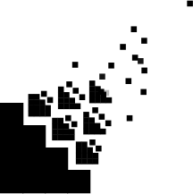

Wekan
Wekan is a online kanban board, is a workflow visualization tool that enables us to optimize our work, by helping us to see the big picture, give us a perspective over all the projects, and dive into the details of every task.
Allows us to stay organized and in communication, because everyone knows the status of tasks as cards move across lists until Done and organize the essential info for each request.
You will find Wekand on App tab in sandstorm, you can create as many boards as you need and customize them as you want.
Backlog board
Welcome to our back log
This is the only way you can request a task to tech team, so it’s important you know how it works.
- It’s very important you check the Backlog at least once or twice a day to be up to date on the status of the task, if the team have any doubt or requires something this will be the contact medium.
Change a view
Views give you different ways to look at items on Board wekand.
Change the view of the board
- [Click on] Board View option, this option in on the top of the board.
- [Click on] until appear Swimlanes option
In this board all tasks are organized by project, each one has its own column (safe2choose, How to use, FMM & Tech Team | Internal) each column has four levels here is a little intro of them (from bottom to top)
- ToDos: Here is where all new task go, for each task a card needs to be created (you will see how to do this in the next step).
- Doing: When a task is being carried out it is transferred to this level.
- Test: When a task has been finished, go to this level to verify that it has been completed and check if it does not need any change, if there are changes to be done go back to the past level. When the tech test will be approved, the responsible party will be pined for final approval.
- Done: When a task is verified and completed passes to this level.
Create a new card / adding a task
-
To add a new task the first thing you have to do is go to ToDos Level of the project, at the end of the existing cards you will find [+ Add Card] click on it
-
It will display a text box, here you should place a descriptive title of the task. Then just [click on add]. And your task will be add to the board. But we need a few more details.
-
Click on the card you have already create, the next menu will be display, the most important values you have to add is:
- Received & Due:
- Click on [Add] and select the date.
- Received select the day you're creating the task
- Due the day you expect it will be completed.
- Start and End will be fill by tech team.
- Members: Click [+] Add yourself to the card to keep you up to date on the status of the task, you will be the responsible of the task, you can add other members of the team but the final approval it’s up to you and any doubt will be addressed to you. Remember it’s very important you check the board at least once or twice a day. Add @cecilia if you don’t know who must attend your request
- Labels: Click [+] .Select the priority of the task
- Description: [Click on] [Edit] to add more details about the task, remember you have to provide all information that is required to finish the task.
- Attachments:You could add images, documents, pdf
- Activity: This is very important tag @cecilia, so we can confirm the date of reception of the task, in this section we can keep on contact, you can send and receive messages.